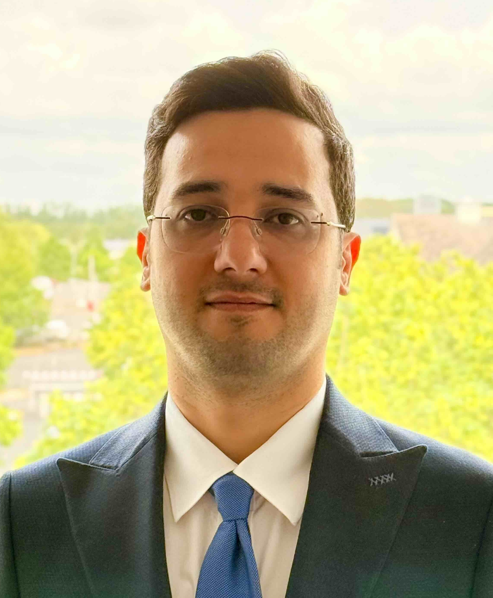

Meet the Team
The Translational Organ Microsystems Research Group is an interdisciplinary research team at the University of Würzburg. We combine expertise in bioengineering, biomaterials, organ-on-chip technologies, mechanobiology, immunology, and translational medicine to develop next-generation human organ microsystems.
Group Leader

Dr. Ali Doryab
Principal Investigator & Group LeaderTranslational Organ Microsystems Research Group
Center of Polymers for Life (CPL)
University of Würzburg
Dr. Ali Doryab leads the Translational Organ Microsystems Research Group. His research focuses on developing next-generation human organ microsystems that combine organ-on-chip technologies, advanced biofabrication, mechanobiology, and immune engineering to better understand human physiology and disease. The group develops biomimetic and predictive human organ models that bridge the gap between conventional preclinical research and clinical translation, with a particular emphasis on the respiratory system.
Dr. Doryab received his PhD from Ludwig Maximilian University of Munich (LMU Munich). He subsequently joined the Helmholtz Munich as a postdoctoral researcher and project leader, where he coordinated interdisciplinary research within several national initiatives, including the KLIMA consortium and the BMBF 3R programme for the development of advanced human-relevant lung models. He was then awarded an independent DFG Walter Benjamin Fellowship, enabling him to establish his independent research programme at the University of Cambridge. During this fellowship he worked first within the Department of Engineering before joining the Department of Medicine at Addenbrooke's Hospital, where he further advanced translational lung-on-chip technologies and human disease models. His research has led to the development of several innovative technologies for tissue engineering and organ-on-chip applications. Among these are the BETA membrane, an ultrathin extracellular matrix-inspired membrane for physiologically relevant lung models, and the CIVIC mini-lung platform, a modular bioengineered human lung model for disease modelling and therapeutic testing. These technologies have resulted in patents, industrial translation, and licensing to commercial partners. Dr. Doryab has received several international recognitions for his research, including the Early Career Award from the International Society for Biofabrication (ISBF, 2023) and the German Center for Lung Research (DZL, 2023). His research is published in leading journals including Advanced Materials, Advanced Functional Materials, and related interdisciplinary journals.
Research Interests- Organ-on-chip and microphysiological systems
- Biofabrication and biomaterials
- Mechanobiology and extracellular matrix remodeling
- Immunocompetent tissue models
- Drug discovery and translational medicine
Google Scholar | ORCID | LinkedIn
Our Team is Growing
The Translational Organ Microsystems Research Group is currently being established at the University of Würzburg. We are actively building an interdisciplinary team of researchers with backgrounds in bioengineering, biomaterials, microphysiological systems, cell biology, immunology, computational modelling, and translational medicine.
We are continuously looking for motivated undergraduate and graduate students, doctoral researchers, postdoctoral fellows, and visiting scientists who are interested in developing next-generation human organ models.
Current opportunities can be found on our Available Positions page. We also strongly support outstanding candidates in applying for prestigious external fellowships and funding programmes.
If your research interests align with our work, we would be delighted to hear from you.
Future Team Members
Profiles of our postdoctoral researchers, PhD students, technicians, undergraduate researchers, and collaborators will be added here as the group continues to grow.